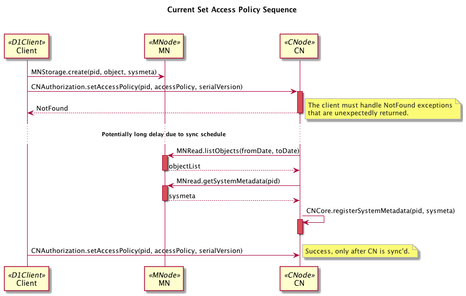
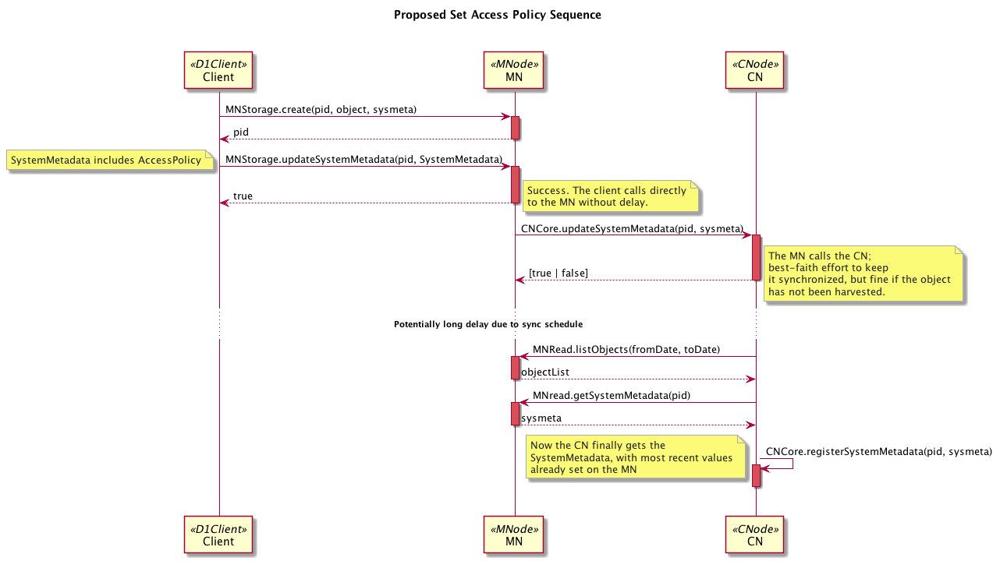

System Metadata¶
Every object (science metadata document, data object, or resource map) managed
by DataONE has number of properties that are used to faciliate access and
mangement of the object (Figure 1). These properties are collectively called “system
metadata” (aka. sysmeta). This document describes which properties of
system metadata may be edited and why. More detailed information about the
purpose for each property and its range of values can be found in the schema
and associated documentation available at Types.SystemMetadata and
v2_0.Types.SystemMetadata.
Figure 1. All managed content (science metadata, science data, and resource maps) in DataONE is accompanied by system metadata (1, 2, 3 respectively). The relationships between science metadata and data object, and thus the structure of a data package, is described by resource maps. In this simple data package, the resource map indicates that the science metadata document documents the science data (4), and that the science data isDocumentedBy the science metadata (5).¶
System metadata is maintained dynamically by each Member Node and synchronized
with Coordinating Nodes through the synchronization process or more directly
through the CNRead.synchronize() API. The Member Node copy is
authoritative except for replica information which the Coordinating Nodes
control (Figure 2). Collation of system metadata properties starts with a
client adding content to a Member Node using the MNStorage.create() API.
System metadata contains properties that are immutable, may be set once, or may
be altered at any time by an authorized subject.
Figure 2. System metadata is provided by Member Nodes (1) in response to a
getSystemMetadata() call by the Coordinating Nodes during the
Member Node synchronization process (2). The Coordinating Node updates the
replica location information (3). The copy of system metadata is replicated
between the Coordinating Nodes, and the Member Node is informed of the
system metadata change (4). A user will typically retrieve system metadata
from the Member Node (5) using the getSystemMetadata() call
since that is the authoritative source for the information.¶
Mutability of System Metadata¶
System metadata elements are partitioned into two classes: metadata elements that must be provided by client software to the DataONE system, and elements that are generated by DataONE itself in the course of object management.
The mutability of system metadata elements is described in Table 1.
Table 1. Mutability of system metadata. Values are initialized by different components during creation, and those values are vetted by (controlled by) downstream, authoritative components. Mutable properties are edited through the specified edit method.
Property |
Mutable? |
Initialized By |
Controlled By |
Edit Method |
|---|---|---|---|---|
Immutable |
Client + MN |
MN + CN |
The identifier is assigned during creation and can not be changed. The CNs will not allow reuse of an identifier, so content created with an identifier that is not unique will be rejected by CNs. |
|
Immutable |
Client |
MN |
The object size is set during creation and can not be changed. |
|
Immutable |
Client |
MN |
The object checksum is determined during creation and can not be changed. |
|
Immutable |
MN |
MN |
The object submitter is set during creation and can not be changed. |
|
Immutable |
MN |
MN |
Upload to a MN occurs once, and the MN MUST set this value to indicate when the content was added to the repository (may be before the repository started operating as a MN). |
|
Immutable |
MN |
MN |
Value is set once by the origin Member Node |
|
|
Set Once |
Client |
MN + CN |
The seriesId can be set if it has no value, but can not be changed once
set. Use |
Set Once |
Client |
MN |
v1, v2: v2: The |
|
Set Once |
Client |
Client |
v1, v2: v2: The |
|
Set Once |
Client |
MN |
v1, v2: |
|
Mutable |
CN |
CN |
v1: Set by CNs in response to any operation that alters System Metadata. v2: Used by CNs for management of replication process. |
|
Mutable |
Client |
MN + CN |
Change is discouraged, values limited to the formats available from
|
|
|
Mutable |
Client |
Client |
As for |
|
Mutable |
Client |
Client |
As for |
Mutable |
Client |
Client |
Rights holder for an object may be altered. |
|
Mutable |
Client |
Client |
Access policy for an object may be altered. |
|
Mutable |
Client |
Client |
||
Mutable |
MN |
MN |
Updated any time a property value is changed. |
|
Mutable |
MN |
CN |
Manual update process that must be performed by a DataONE administrator. |
|
Mutable |
CN |
CN |
|
Changing System Metadata Values¶
Table 1. lists the properties of System Metadata that may be altered by authorized users. This section describes how those changes are performed.
In all cases it is assumed that the user is appropriately authenticated and is
authorized to perform the operation. Users must have CHANGE_PERMISSION
permission in order to alter system metadata. The object rightsHolder, the
identity of the authoritativeMemberNode, and the identity of a Coordinating
Node will always have permission to update system metadata for an object.
Updating System Metadata in Version 2.x¶
In version 2.x, properties of System Metadata are set via the Member Node using
the MNStorage.updateSystemMetadata() implemented by version 2.x Member
Nodes. This method is implemented as a HTTP PUT agains the /meta endpoint of the
Member Node with the identifier included as a URL parameter and the new System
Metadata serialized as XML included in the MIME-Multipart payload.
Updating System Metadata in Version 1.x¶
Todo
flesh this out with examples
System Metadata Schema¶
The structure of SystemMetadata is defined in XMLSchema.
The current release of the System Metadata schema involves three parts. Version 1.0 provides a full schema which version 1.1 extends, which is in turn extended by version 2.0.
Release versions of the schema are available from their namespace URIs:
- Version 1.0
- Version 1.1
- Version 2.0
Development versions of the schema are maintained in a subversion repository at:
https://repository.dataone.org/software/cicore/trunk/d1_schemas/
Todo
example for system metadata
Roadmap to System Metadata Control Changes (DRAFT - to be reviewed)¶
The following outline describes the policy and technical steps needed to shift the majority of control of system metadata attributes to Member Nodes such that client operations are more responsive. The changes would require a new DataONE API v2 that involve changes to the DataONE Types schema, changes to the Member Node APIs, changes to the Coordinating Node APIs, and changes to the various software stacks that implement these APIs. It will also involve a release and deployment schedule that allows both v1 and v2 of the APIs to be in operation simultaneously.
In transferring control to the Member Nodes, they also adopt the responsibility of consistently managing the versions of the documents in a serial manner. Use of the serialVersion attribute ensures that previous values are not overwritten by new values out of order (e.g. AccessPolicy)
Rationale¶
The main use case involves access control. When a scientist using an ITK client creates an object through MN.create(), control of the system metadata is currently transferred to the CN once synchronization happens. After that point, the ITK client (and scientist) has to make CN.setAccessPolicy() calls to make any changes. If the MN is set to sync once a week, this is problematic, since the scientist would naturally expect that the access control changes should take effect immediately.
Example sequence diagrams show the differnce follows:
—
1. Change architecture to shift authority to MNs¶
This document describes the management of system metadata across nodes, and has been updated to reflect control of system metadata attributes by the MN rather than the CN, except for the Replicas listed per object. Text changes are highlighted here.
2. Evaluate DataONE Types Schema¶
The Types Schema could be changed in two ways:
2.1 Modify the Replica Type
By adding an optional version attribute to the Replica Type, the Coordinating Nodes would no longer need to rely on the serialVersion attribute of the entire system metadata document to manage versions. A Replica example, with the version line highlighted, would be:
<replica version="1">
<replicaMemberNode>urn:node:PISCO</replicaMemberNode>
<replicationStatus>completed</replicationStatus>
<replicaVerified>2012-07-10T00:00:00.000+00:00</replicaVerified>
</replica>
By making the version attribute optional, this approach would be backwards-compatible with existing system metadata documents in the system. However, the Replica list in System Metadata documents on the MN may be out of sync with the list on the CN during times of rapid change such as MN-to-MN replication operations.
2.2 Remove the Replica
Another approach is to remove the Replica entry from the SystemMetadata Type entirely, and manage replicas separately. This approach would be backwards-incompatible with existing system metadata documents, but once upgraded, all Replica information would be obtained through the CN services.
Todo
Needs discussion.
2.3 Leave the data types as is and let the CN have control over both the replica list and the serialVersion as it currently does. We always hope and intend that the MN and CN will have the same consistent SystemMetadata eventually. In this scenario, the CN would ignore any values the MN provided for SM.serialVersion and SM.replica and the MN would accept those values as provided by the CN’s copy of SystemMetadata. This allows much of our processing on the CN to remain as is and the different types of nodes then choose which parts of SM to manage/ignore. BRL: I believe we decided to pursue this course for now.
3. Change DataONE APIS¶
Changes would be required for both the Member Node and Coordinating Node APIs, in both the architecture documentation and the d1_common_java and d1_common_python libraries:
3.1 MN and CN API changes
Action |
Method |
Notes |
Add |
MNStorage.updateSystemMetadata() |
Instead of multiple methods |
Change |
MNRead.systemMetadataChanged() |
Move from MNAuthorization |
Reject |
MNAuthorization.setRightsHolder() |
|
Reject |
MNAuthorization.setAccessPolicy() |
|
Reject |
CNCore.sytemMetadataChanged() |
Required to push notify CNs |
Add |
CNCore.updateSytemMetadata() |
Keeps the CN copy in sync |
Deprecate |
CNCore.archive() |
|
Deprecate |
CNCore.setObsoletedBy() |
|
Deprecate |
CNAuthorization.setRightsHolder() |
|
Reject |
CNReplication.getReplicaVersion() |
|
Reject |
CNReplication.setReplicaVersion() |
As an alternative to individual MN APIs above, we might want to consider using a single MN call to update system metadata documents:
Action |
Method |
Notes |
Add |
MNCore.updateSytemMetadata() |
Using this method now |
Note
CJ and BRL discussed this and decided the single updateSystemMetadata method would suffice and implementations could determine which mutable fields from the SystemMetadata it would update. TBD: do we reject updates if an immutable field differs from the original value even if we never intend to save that new value anyway?
4. Change Library Implementations¶
The DataONE Client Libraries (d1_libclient_java and d1_libclient_python) will need to be changed to support the above API changes in v2, as well as the existing v1 APIs. This will help multiple MN software stacks in supporting both APIs.
5. Change Coordinating Node Implementations¶
5.1 New CN Rest Service calls
The CN REST Service will need to be modified to add and deprecate the methods listed above. Likewise, the CN REST Proxy will also need to be adjusted.
5.2 MN to CN Synchronization
With these changes, d1_synchronization classes will need to consult the node registry to determine if an MN implements v1 or v2 of the API, and act accordingly. As the synchronization code adds in replica entries, it should notify the authoritative Member Node and all replica Member Nodes of the change using MNRead.systemMetadataChanged() calls. It will also need to call CNReplication.setReplicaVersion() for new entries.
5.3 MN to MN Replication
The CN ReplicationManager code will need to be adjusted to 1) Get authoritative copies of system metadata from the MN, 2) use CNReplication.getReplicaVersion() and CNReplication.setReplicaVersion() when processing replica tasks rather than setting the serialVersion of the system metadata document.
5.4 Metacat CNodeService and schema
The MetacatCNodeService class will need to be modified to implement the above CN API calls. Likewise, the database schema will need to change to store a new version column in the smreplicationstatus SQL table. This will also affect other classes that manage the persistence of system metadata, namely IndetifierManager. Upgrade classes and scripts will need to be written for existing installations.
6. Change Member Node implementations¶
Member node software stacks will need to implement the API methods listed above, and will need to ensure that other calls that affect system Metadata entries also update Coordinating Node system metadata copy. For instance, a call to MNStorage.update() should also call CNCore.updateSystemMetadata() so that the CNs remain in sync with the MNs with regard to system metadata.
7. Release and Deploy New Nodes¶
We will need to establish a release schedule and deploy software stacks, likely in this order:
d1_schemas
d1_common
d1_libclient
CN implementations
MN implementations
Note that we plan on introducing other changes into the DataONE types schema to accommodate mutable content and other features. Changes to the type schema should be consolidated to reduce the impact on software that depend on the types.